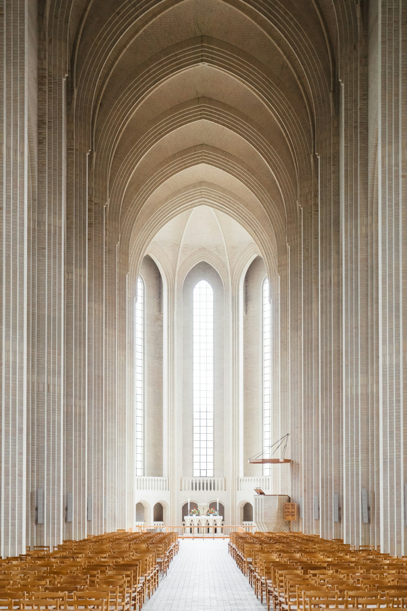
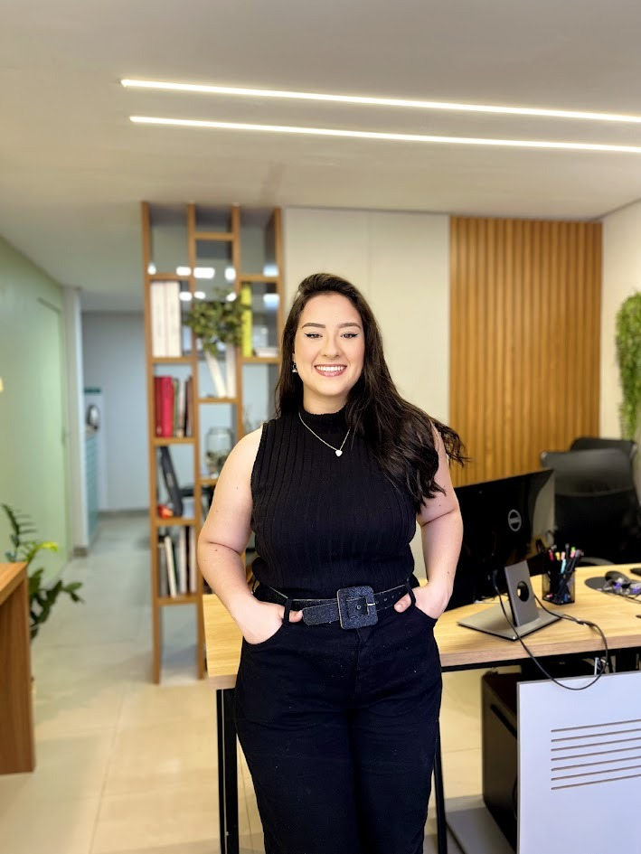

Projeto Litúrgico
Planeja o espaço segundo as normas litúrgicas, integrando altar, ambão, sacrário e assembleia com harmonia e propósito.

Projetamos igrejas, capelas e santuários que despertam a reverência, convidam à contemplação e traduzem em forma e luz o encontro com o sagrado.

Sou Ana Célia, arquiteta especializada em arquitetura sacra, com mais de 8 anos dedicados a projetar espaços que acolhem a oração e manifestam a beleza do sagrado. Cada templo é pensado para conduzir quem entra a um encontro mais profundo com o divino.
Minha missão é ir além da estética: unir liturgia, simbolismo e funcionalidade em ambientes que inspiram devoção e servem à comunidade por gerações. O que me diferencia? Um olhar atento à tradição da fé e à identidade única de cada comunidade.


Do conceito litúrgico ao acompanhamento de obra — cada etapa cuidada para que o espaço sirva à comunidade por gerações.
Planeja o espaço segundo as normas litúrgicas, integrando altar, ambão, sacrário e assembleia com harmonia e propósito.
Traduz a fé em formas, materiais e ornamentos que elevam a alma e despertam a devoção dos fiéis.
Trabalha a luz natural e o som para criar ambientes de reverência, silêncio e contemplação.
Garante que o projeto atenda às orientações da diocese e da comunidade, respeitando a tradição sacra.

Cada templo é pensado para conduzir quem entra a um encontro mais profundo com o divino.Ana Célia — Arquitetura Sacra
Conheça alguns dos espaços sagrados que transformam a experiência de fé de comunidades e fiéis.
Espaço celebrativo desenhado em torno do altar, com luz e acústica a serviço da liturgia.

Ornamentos e vitrais que narram a fé e conduzem o olhar à contemplação do mistério.

Mobiliário litúrgico projetado com sobriedade, dignidade e verdade dos materiais.
Agende uma conversa inicial gratuita. Ouviremos as necessidades da sua paróquia ou comunidade e apresentaremos uma proposta personalizada.